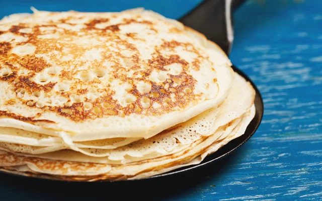

Mousse de Maracuja
Sobremesa cremosa e refrescante.
Ola! Este e o meu blog pessoal criado como trabalho da disciplina de Desenvolvimento Web. Aqui compartilho um pouco sobre minha trajetoria, curriculo, receitas favoritas e formas de contato.
Use o menu lateral para navegar entre as paginas. Espero que goste!
Confira minhas receitas favoritas com fotos e passo a passo completo.
Sobremesa cremosa e refrescante.

Bolo fofinho com cobertura de chocolate.

Prato rapido para o dia a dia.

Perfeita para o cafe da manha.
Comecei o semestre com muita animacao para aprender HTML, CSS e JavaScript.
Publicado em: 10/03/2026
Descobri que fazer mousse de maracuja em casa e mais facil do que parece!
Publicado em: 05/03/2026
Estou montando este blog como entrega do trabalho. Ainda estou aprendendo, mas ja estou gostando!
Publicado em: 01/03/2026